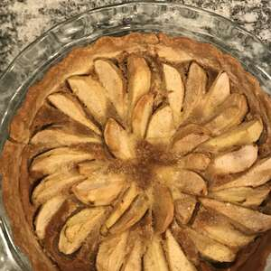

Pear Pie

Description
A creamy pear pie.
Ingredients
- 1 (9 inch) unbaked pie crust
- 2 pears - peeled, cored and cut in half
- 1 cup white sugar
- ¼ cup butter
- ¼ cup all-purpose flour
- 1 tablespoon vanilla extract
- 2 eggs, beaten
Directions
- Preheat the oven to 350 degrees F (175 degrees C).
-
Press the pie pastry into the bottom and up the sides of a 9 inch pie
plate. Flute the edges. Place the pear halves cut side down in the pie
crust with the small ends toward the center.
-
In a medium bowl, mix the butter and sugar together until smooth, then
beat in the eggs one at a time until light and fluffy. Stir in flour and
vanilla. Pour over the top of the pears.
-
In a medium bowl, mix the butter and sugar together until smooth, then
beat in the eggs one at a time until light and fluffy. Stir in flour and
vanilla. Pour over the top of the pears.